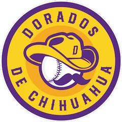

High Minors · RP
Ben Fritz
- Team
 Chihuahua Dorados
Chihuahua Dorados- Organization
- Mexico City Golden Eagles
- Position
- RP
- Bats/Throws
- R/R
- Height/Weight
- 6'4", 238 lb
- Born
- Mar 29, 1981 in San Jose, CA
- Age
- 21
- Uniform
- #52
2002 batting
| Team | Lg | G | PA | AB | R | H | 2B | 3B | HR | RBI | BB | K | SB | AVG | OBP | SLG | OPS |
|---|---|---|---|---|---|---|---|---|---|---|---|---|---|---|---|---|---|
| CHIU | High Minors | 5 | 0 | 0 | 0 | 0 | 0 | 0 | 0 | 0 | 0 | 0 | 0 | - | - | - | - |
| QuCo | Low Minors | 5 | 13 | 12 | 1 | 3 | 0 | 0 | 0 | 1 | 1 | 4 | 0 | .250 | .308 | .250 | .558 |
2002 pitching
| Team | Lg | G | GS | W | L | SV | IP | H | R | ER | BB | K | HR | ERA | WHIP |
|---|---|---|---|---|---|---|---|---|---|---|---|---|---|---|---|
| QuCo | Low Minors | 5 | 5 | 3 | 1 | 0 | 28.1 | 28 | 6 | 5 | 13 | 28 | 1 | 1.59 | 1.45 |
| CHIU | High Minors | 5 | 0 | 0 | 1 | 0 | 8.2 | 8 | 1 | 1 | 5 | 6 | 0 | 1.04 | 1.50 |
2002 pitching game log
| Date | Opp | Score | Dec | IP | H | R | ER | BB | K | HR | PC | |
|---|---|---|---|---|---|---|---|---|---|---|---|---|
| May 12 | vs BAKR | L 3-4 | L | 2.0 | 1 | 1 | 1 | 2 | 2 | 0 | 40 | |
| May 9 | vs SALM | W 6-3 | H | 2.0 | 3 | 0 | 0 | 2 | 1 | 0 | 37 | |
| May 5 | @ RASP | W 8-3 | H | 1.2 | 1 | 0 | 0 | 1 | 1 | 0 | 22 | |
| May 3 | vs SuLa | L 8-9 | 1.0 | 1 | 0 | 0 | 0 | 1 | 0 | 11 | ||
| May 2 | vs SuLa | L 2-7 | 2.0 | 2 | 0 | 0 | 0 | 1 | 0 | 31 | ||
| Apr 23 | @ JOLI | W 8-3 | GS | W | 5.1 | 7 | 1 | 1 | 2 | 4 | 0 | 89 |
| Apr 18 | vs EBBi | W 7-2 | GS | W | 7.2 | 7 | 2 | 1 | 3 | 10 | 0 | 108 |
| Apr 13 | @ DUCK | W 4-1 | GS | W | 6.0 | 4 | 1 | 1 | 2 | 4 | 1 | 92 |
| Apr 7 | @ RiRed | L 1-4 | GS | L | 4.0 | 4 | 2 | 2 | 4 | 5 | 0 | 86 |
| Apr 3 | vs TULSA | W 3-1 | GS | 5.1 | 6 | 0 | 0 | 2 | 5 | 0 | 83 |
2002 batting game log
| Date | Opp | Score | Pos | AB | R | H | 2B | 3B | HR | RBI | BB | K | SB |
|---|---|---|---|---|---|---|---|---|---|---|---|---|---|
| May 12 | vs BAKR | L 3-4 | PH | 0 | 0 | 0 | 0 | 0 | 0 | 0 | 0 | 0 | 0 |
| May 9 | vs SALM | W 6-3 | PH | 0 | 0 | 0 | 0 | 0 | 0 | 0 | 0 | 0 | 0 |
| May 5 | @ RASP | W 8-3 | PH | 0 | 0 | 0 | 0 | 0 | 0 | 0 | 0 | 0 | 0 |
| May 3 | vs SuLa | L 8-9 | PH | 0 | 0 | 0 | 0 | 0 | 0 | 0 | 0 | 0 | 0 |
| May 2 | vs SuLa | L 2-7 | PH | 0 | 0 | 0 | 0 | 0 | 0 | 0 | 0 | 0 | 0 |
| Apr 23 | @ JOLI | W 8-3 | P | 3 | 1 | 1 | 0 | 0 | 0 | 0 | 0 | 1 | 0 |
| Apr 18 | vs EBBi | W 7-2 | P | 3 | 0 | 1 | 0 | 0 | 0 | 1 | 1 | 2 | 0 |
| Apr 13 | @ DUCK | W 4-1 | P | 3 | 0 | 1 | 0 | 0 | 0 | 0 | 0 | 0 | 0 |
| Apr 7 | @ RiRed | L 1-4 | P | 1 | 0 | 0 | 0 | 0 | 0 | 0 | 0 | 0 | 0 |
| Apr 3 | vs TULSA | W 3-1 | P | 2 | 0 | 0 | 0 | 0 | 0 | 0 | 0 | 1 | 0 |